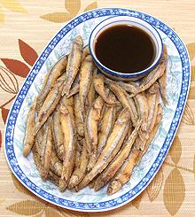

Blue Anchovy
[Encrasicholina devisi]
This Indo-Pacific fish can grow to 3 inches but the photo specimen, shown with a toothpick for scale, was 2-1/2 inches and weighed .075 ounce (that's over 200 to the pound). They are found in the Persian Gulf, the Indian Ocean and the West-Central Pacific as far southeast as Fiji and as far north as Taiwan.
More on Anchovies.
|  |
Buying: These anchovies are common here in Southern California in markets serving Southeast Asian communities, particularly Filipino. They may be on ice, or in trays in the freezer cases. Cooking: Clearly you are not going to be filleting this fish except under a microscope. This is a fish to fry crisp and eat "head guts and feathers" - not an exact fit to the the delicate sensibilities of the baby spinach set.
|